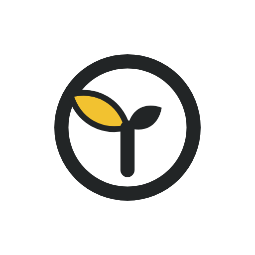
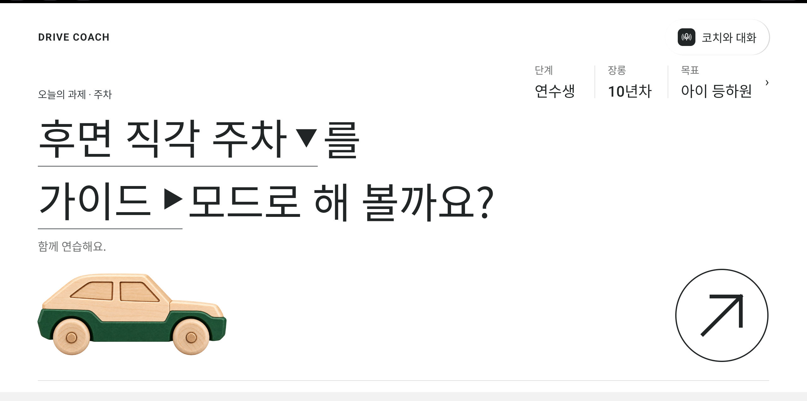
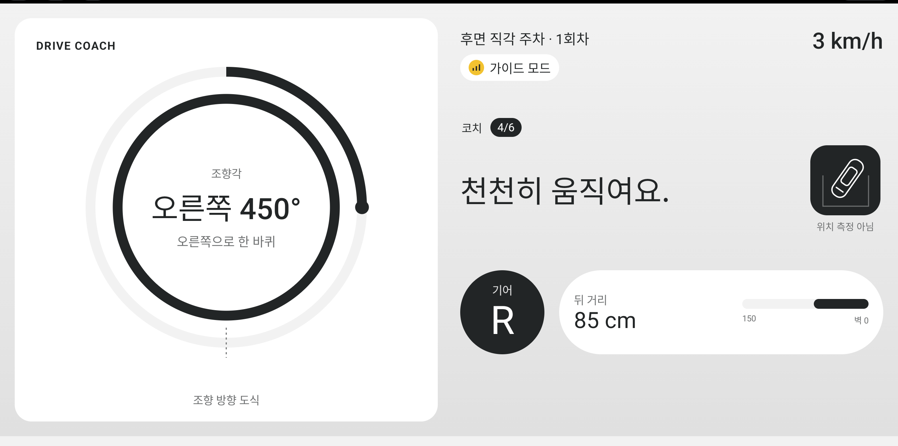
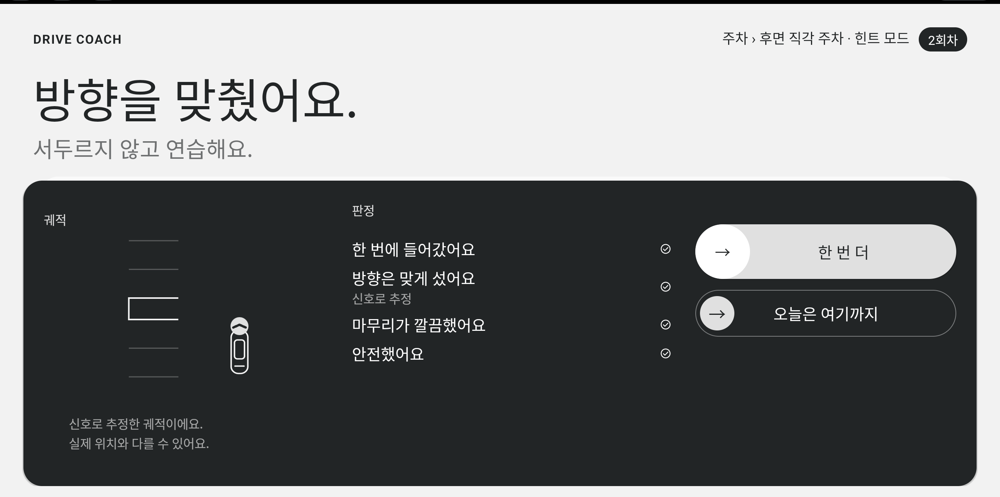
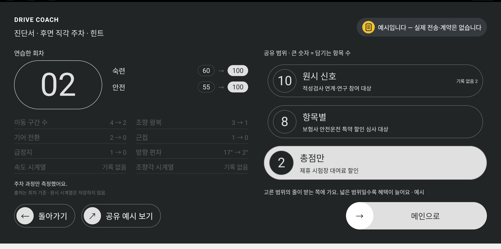

Drive Coach — 화내지 않는 조수석
사고치조 / 전준영
제출 양식 미리보기
실제 제출은 주최 PPT 양식에 원고를 옮긴다
실제 제출은 주최 PPT 양식에 원고를 옮긴다
| 항목 | 사용 여부 | 작성 내용 |
|---|---|---|
| 개발 배경 | — | 면허는 있지만 운전을 쉰 사람에게는 두려운 순간(주차·첫 100일)을 화내지 않고 반복해 줄 조수석이 없다. 차량 물적 사고의 30.2%가 주차 중(그중 53.8%가 후진), 초보 첫해 사고의 41%가 처음 100일 안, 학원 도로연수 10시간 50~60만 원. 아이 때문에 다시 운전을 시작한 장롱면허 10년차 가족을 옆에서 가르치다 둘 다 힘들었던 경험에서 출발했다. |
| 주요 기능 | — | 두려운 상황을 과제 18개(주차 4 · 도로 주행 6 · 점검 2 · 지식 6)로 쪼개고, 차량 신호로 과정을 측정해 가이드 → 힌트 → 평가 순으로 도움을 줄여 간다. 틀린 순간엔 규칙이 바로 음성으로(지연 0), 주행 중 화면은 잠근다. 정차하면 점수 대신 판정 네 가지와 회차 멘트, 문을 열면 리포트 · 진단서(공유 범위를 운전자가 고름) · 제휴 시험장 모의시험 · 말 카드 코치 대화 · 지식 테스트. |
| 기대 효과 | — | 사고가 가장 많은 순간을 차 안에서 혼자 반복 연습(학원·동승 없이). 틀린 순간만 짧게 말해 운전자가 화면을 보지 않고 동승 갈등이 줄어든다. 회차가 쌓이면 진단서가 되어 보험·시험장·기관으로 이어질 수 있다(예시). 차량 신호만 쓰므로 카메라 없이 모든 AAOS 차량에 올릴 수 있다. |
| AI 연동 | O | 사내 Copilot(chat/completions)으로 회차 멘트·총평·홈 코치 대화 문장 생성. 규칙이 측정한 판정을 입력으로, 응답은 길이·금지어·의도 목록으로 검증해 실패하면 규칙 문장 폴백(사내: 로그인 뒤 폴백 0, 1.2~1.5 s). 감점 순간 힌트는 규칙(지연 0). 음성 인식·주행 중 실시간 AI 발화 없음. |
| Vehicle API | O | VSS get/set/subscribe — Speed(급가속·급제동·잠금) · SteeringWheel.Angle(조향 왕복·방향 추정) · SelectedGear(기어·P) · Seat IsBelted · Door IsOpen(정차+문 = 리포트) · DirectionIndicator L/R · Hazard(점검·돌발) · LowVoltageSystemState(시동) · Brake.PedalPosition · Beam.Low · Wiping.Mode · ObstacleDetection. 신호마다 실신호/시뮬레이션/미측정을 구분해 미측정은 채점 제외, 뒤 거리·시험장 위치는 시뮬레이션으로 표시. 사내 차량 환경에서 코드 수정 없이 실행(실신호 7 · 시뮬 1 · 미측정 0). |

①홈 — 프로필이 첫 과제·모드를 제안

②말 카드로 코치와 대화 → 과제를 홈에(AI)

③주차 중 — 조향 링·기어·뒤 거리, 틀린 순간만 음성

④회차 판정 네 가지 + 멘트, 2회차엔 ✓✓✓✓

⑤문을 열면 리포트 → 진단서 공유 범위(예시)

⑥제휴 시험장 모의시험 — 구간 감점·돌발·합격선
주요 기능 과제 18 × 세 모드(가이드→힌트→평가) · 차량 신호로 과정 측정 · 판정 네 가지 · 말 카드 AI 코치 · 진단서/공유 · 시험장 모의시험
동작 과정 홈(프로필·대화로 과제 선택) → 브리핑 → 연습(틀린 순간 음성, 주행 중 잠금) → 정차 "다 됐어요" → 판정·멘트 → 한 번 더 → 문 열림 → 리포트·진단서
기대 효과 사고가 가장 많은 순간을 혼자 차 안에서 반복 연습 · 동승 갈등 없이 · 기록이 진단서로(보험·시험장·기관 — 예시) · 카메라 없이 모든 AAOS 차량
동작 과정 홈(프로필·대화로 과제 선택) → 브리핑 → 연습(틀린 순간 음성, 주행 중 잠금) → 정차 "다 됐어요" → 판정·멘트 → 한 번 더 → 문 열림 → 리포트·진단서
기대 효과 사고가 가장 많은 순간을 혼자 차 안에서 반복 연습 · 동승 갈등 없이 · 기록이 진단서로(보험·시험장·기관 — 예시) · 카메라 없이 모든 AAOS 차량
한계 — 카메라가 없어 칸 안 최종 위치는 판정하지 않는다(과정을 본다) · 예약·진단서 공유·시험장 위치 신호는 시뮬레이션/예시 · 캡처는 외부 에뮬